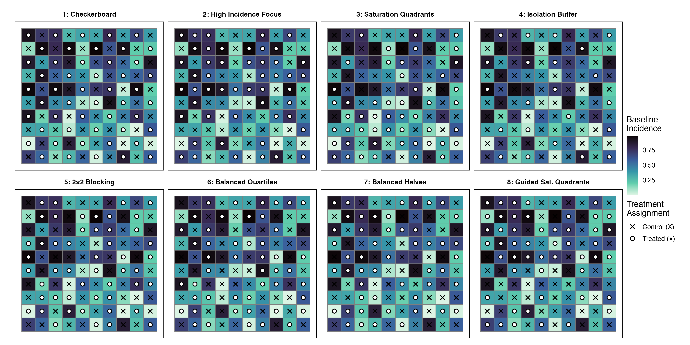

Theoretical Methods
Study Region and Spatial Structure
To formalize the spatial relationships inherent in a cluster randomized trial (CRT), the theoretical study region is defined as a regular square lattice grid. Let the spatial domain be denoted as \(\mathcal{G} = \{s_1, s_2, \dots, s_N\}\), where each spatial cluster \(s_i\) is located at discrete integer coordinates \((x_i, y_i)\). The total number of uniformly sized clusters within the geographic network is \(N\). Utilizing a regular lattice structure isolates the methodological evaluation of the sampling designs from the confounding effects of irregular polygon geometries and heterogeneous cluster populations, providing a standardized baseline to systematically compare trial designs [@cressie_statistics_1993].
The spatial relationships between clusters are parameterized using strict contiguity-based definitions, which dictate the pathways through which intervention effects and spatial dependence propagate. Two primary contiguity structures are formalized for this framework:
Rook Contiguity: Clusters are considered adjacent neighbors strictly if they share a direct horizontal or vertical edge. The neighborhood set for a given cluster \(s_i\) under Rook contiguity is defined as: \[\mathcal{N}_R(s_i) = \left\{ s_j \in \mathcal{G} : |x_i - x_j| + |y_i - y_j| = 1 \right\}\]
Queen Contiguity: Clusters are considered neighbors if they share either a direct edge or a single vertex, inherently including diagonal adjacencies. The corresponding neighborhood set is defined as: \[\mathcal{N}_Q(s_i) = \left\{ s_j \in \mathcal{G} : \max(|x_i - x_j|, |y_i - y_j|) = 1 \right\}\]
To incorporate these neighborhood structures into the spatial econometric modeling, an \(N \times N\) spatial weight matrix, \(\mathbf{W}\), is constructed [@lesage_introduction_2009]. Let \(\mathbf{A}\) denote an \(N \times N\) binary adjacency matrix where the element \(A_{ij} = 1\) if \(s_j \in \mathcal{N}(s_i)\), and \(A_{ij} = 0\) otherwise. By convention, \(A_{ii} = 0\) for all \(i\). Clusters located on the boundaries of the spatial grid naturally possess fewer neighbors (edge effects). To facilitate the interpretation of spatial lags as localized neighborhood averages, the weight matrix \(\mathbf{W}\) is row-standardized. This row-standardization inherently compensates for these edge effects by distributing the total weight equally among the available neighbors. The elements of the row-standardized spatial weight matrix are defined as:
\[W_{ij} = \frac{A_{ij}}{\sum_{k=1}^N A_{ik}} \quad \text{for } i \neq j, \text{ and } W_{ii} = 0\]
Data Generating Process and the Spatial Durbin Model
In community-based public health trials, the observed outcome within a specific geographic cluster is rarely independent of its surrounding spatial context. To capture both the endogenous spatial dependence of the outcome variable and the exogenous spillover effects generated by the localized treatment, the data-generating process utilizes the Spatial Durbin Model (SDM) [@lesage_introduction_2009]. The continuous outcome vector for the spatial grid, \(\mathbf{Y} = (Y_1, \dots, Y_N)^\top\), is expressed in its reduced structural form as:
\[\mathbf{Y} = (\mathbf{I}_N - \rho \mathbf{W})^{-1} [\tau \mathbf{Z} + \gamma \cdot \text{Spill}(\mathbf{Z}) + \beta \mathbf{X} + \mathbf{\epsilon}]\]
In this structural equation, the parameters operate as follows:
- \(\mathbf{I}_N\) is the \(N \times N\) identity matrix.
- \((\mathbf{I}_N - \rho \mathbf{W})^{-1}\) acts as the global spatial multiplier, inducing global spatial dependence and ensuring that a localized intervention effect reverberates throughout the entire spatial network, decaying exponentially with topological distance.
- \(\rho\) is the spatial autocorrelation coefficient. The condition \(|\rho| < 1\) must be maintained to ensure the matrix is invertible and the spatial process remains stable.
- \(\tau\) is the primary estimand of interest, representing the true direct effect of the intervention on the treated cluster.
- \(\mathbf{Z}\) is an \(N \times 1\) binary treatment assignment vector, where \(Z_i = 1\) indicates that cluster \(s_i\) received the active intervention.
- \(\mathbf{X}\) is an \(N \times 1\) continuous vector representing the pre-existing baseline outcome incidence within each cluster.
- \(\beta\) is a scalar coefficient governing the direct linear effect of the baseline incidence \(\mathbf{X}\) on the final observed outcome.
- \(\mathbf{\epsilon}\) represents an \(N \times 1\) vector of independent and identically distributed random error terms, where \(\mathbf{\epsilon} \sim \mathcal{N}(\mathbf{0}, \sigma^2 \mathbf{I}_N)\).
The function \(\text{Spill}(\mathbf{Z})\) calculates an \(N \times 1\) vector representing the degree of indirect treatment exposure that each cluster receives from its immediate neighbors, weighted by the scalar spillover magnitude parameter, \(\gamma\). The base spillover exposure for a given cluster \(i\) is calculated as the proportion of its contiguous neighbors assigned to the intervention arm: \((\mathbf{W}\mathbf{Z})_i = \frac{1}{|\mathcal{N}(i)|} \sum_{j \in \mathcal{N}(i)} Z_j\).
This framework accommodates two mathematical mechanisms of spillover propagation:
Bidirectional Spillover (Intervention & Control): The indirect spillover effect impacts all clusters in the network regardless of their internal treatment assignment status. The exposure for cluster \(i\) is defined as \(\text{Spill}_i^{(\text{both})} = (\mathbf{W}\mathbf{Z})_i\).
Control-Only Spillover: The spillover effect functions exclusively as an externality for clusters that did not directly receive the intervention. The exposure is defined using a Hadamard product: \(\text{Spill}_i^{(\text{ctrl})} = (\mathbf{W}\mathbf{Z})_i \cdot (1 - Z_i)\).
Spatially Heterogeneous Incidence Generation
The baseline incidence vector \(\mathbf{X}\) models the historical, pre-intervention outcome rates distributed across the geographic clusters. To rigorously evaluate the vulnerability of spatial sampling designs to underlying data structures, \(\mathbf{X}\) is generated via three distinct modes. The final incidence metric \(X_i\) is computationally mapped to a strictly continuous scale bounded within \([0, 1]\).
Mode 1: Independent and Identically Distributed (iid) Uniform Incidence. As a methodological baseline, incidence is generated with no underlying spatial structure: \[X_i \sim \text{Uniform}(0, 1) \quad \text{for } i = 1, \dots, N\]
Mode 2: Spatially Correlated Incidence (SAR Filter). To reflect scenarios where underlying outcomes naturally cluster geographically, incidence is generated utilizing a Simultaneous Autoregressive (SAR) filter [@lesage_introduction_2009]: \[\mathbf{X}^* = (\mathbf{I}_N - \rho_X \mathbf{W})^{-1} \mathbf{u}, \quad \text{where } \mathbf{u} \sim \mathcal{N}(\mathbf{0}, \mathbf{I}_N)\]
Here, \(\rho_X \in [0, 1)\) controls the degree of spatial autocorrelation in baseline incidence. A probability integral transform is applied using the standard normal CDF, \(\Phi(\cdot)\), yielding the final bounded incidence: \(X_i = \Phi(X_i^*)\).
Mode 3: Poisson Count-Based Incidence. Motivated by empirical disease incidence distributions—specifically Sudden Unexpected Death (SUD) demographic data [@mirzaei_years_2019; @gan_factors_2019]—this mode generates discrete event counts based on localized population densities and spatially correlated underlying relative risks. First, spatially correlated log-rates are generated: \[\log \mathbf{\lambda}^* = \mu_0 \mathbf{1} + (\mathbf{I}_N - \rho_X \mathbf{W})^{-1} \mathbf{u}, \quad \text{where } \mathbf{u} \sim \mathcal{N}(\mathbf{0}, \mathbf{I}_N)\]
Expected case counts are drawn from a Poisson distribution scaled by cluster population \(P_i\): \[C_i \sim \text{Poisson}(\lambda_i^* P_i)\]
Observed rates \(R_i = C_i / P_i\) are rank-normalized to preserve ordinal spatial clustering while mapping to \([0, 1]\): \[X_i = \frac{\text{rank}(R_i) - 0.5}{N}\]
Treatment Assignment Designs
The explicit determination of the binary treatment vector \(\mathbf{Z}\) dictates how the direct intervention is deployed across the targeted region. This methodology contrasts strictly spatial randomization methods against covariate-constrained assignment algorithms that actively utilize the observed incidence vector \(\mathbf{X}\). Each sampling design targets a globally balanced allocation where approximately half of the clusters receive the intervention (\(\sum_{i=1}^N Z_i \approx N/2\)).

Strictly Spatial Methods
Checkerboard (Block Stratification): A deterministic, alternating assignment pattern designed to maximize spatial separation by ensuring that every treated cluster is entirely surrounded by control clusters under Rook contiguity. For a cluster at coordinates \((x_i, y_i)\), the assignment is \(Z_i = (x_i + y_i) \pmod{2}\).
Saturation Quadrants: The spatial grid is bisected along both axes, partitioning the landscape into four equally sized geographic quadrants. Each quadrant is randomly assigned a distinct, fixed treatment saturation density without replacement (0.20, 0.40, 0.60, and 0.80). Clusters within each quadrant are randomly assigned to treatment until the saturation target is met.
Isolation Buffer Treatment Clusters: A stochastic, greedy spatial algorithm designed to prevent contiguous treatment spillover between active intervention units. An available cluster is randomly selected for treatment (\(Z_i = 1\)). Immediately following selection, that cluster and all of its immediate contiguous neighbors are permanently removed from the eligible assignment pool. Treatment proportion varies across realizations (typically approximately 20–30%).
\(2 \times 2\) Random Blocking: The global spatial lattice is evenly partitioned into distinct, non-overlapping \(2 \times 2\) contiguous geographic blocks. Within each localized block of four clusters, exactly two clusters are stochastically assigned to the intervention arm.
Covariate-Constrained Methods (Incidence-Guided)
Median Incidence Grouping (High Incidence Focus): A deterministic allocation strategy that actively targets the geographic areas suffering from the highest historical burden. Clusters are assigned to the intervention arm strictly if their baseline incidence exceeds the median: \(Z_i = \mathbf{1}[X_i > \text{median}(\mathbf{X})]\).
Treatment Balanced Incidence Quartiles: Clusters are stratified into four strata based on the quartiles of the baseline incidence vector \(\mathbf{X}\). Within each incidence stratum, approximately 50% of the clusters are randomly assigned to the intervention arm, balancing historical severity across both treatment and control groups.
Balanced Halves: Clusters are stratified into two groups by median baseline incidence. Within each half, approximately half of the clusters are randomly assigned to treatment. This is a 2-stratum analog of the Balanced Quartiles design, providing coarser but still effective incidence balancing.
Incidence-Guided Saturation Quadrants: The spatial grid is partitioned into four quadrants using the same spatial partition as Design 2 (Saturation Quadrants). Quadrants are ranked by their average baseline incidence \(\bar{X}_{Q_k}\) in descending order and deterministically assigned saturation levels: the highest-incidence quadrant receives 0.80 saturation, the second receives 0.60, the third 0.40, and the lowest-incidence quadrant receives 0.20. Within each quadrant, clusters are randomly selected for treatment at the assigned rate. Unlike the standard Saturation Quadrants design, the saturation-to-quadrant mapping is guided by incidence data rather than random, concentrating treatment resources in areas of highest baseline burden while maintaining within-quadrant randomization.
Estimation via Maximum Likelihood
In the presence of endogenous spatial dependence (\(\rho \neq 0\)) and exogenous spillover (\(\gamma \neq 0\)), estimators such as the Difference-in-Means fundamentally violate the Stable Unit Treatment Value Assumption (SUTVA). Furthermore, Ordinary Least Squares (OLS) regression fails as an unbiased estimator in this context due to continuous spatial feedback loops. Because the unobserved spatial structure correlates simultaneously with both the treatment assignment mechanics and the final outcome, the expected value of the error term conditional on the regressors is non-zero (\(E[\mathbf{\epsilon} \mid \mathbf{Z}, \mathbf{W}] \neq 0\)). Consequently, OLS models suffer from simultaneity bias, yielding systematically biased point estimates and artificially deflated standard errors.
To achieve statistically consistent estimation of the direct intervention effect \(\tau\), a spatial autoregressive regression framework must be utilized [@bivand_comparing_2015]. The corresponding empirical estimation model takes the matrix form:
\[\mathbf{Y} = \rho \mathbf{W} \mathbf{Y} + \mathbf{X}_{\text{design}}\mathbf{\beta}_{\text{design}} + \mathbf{\epsilon}\]
where the composite design matrix is \(\mathbf{X}_{\text{design}} = [\mathbf{Z} \quad \text{Spill}(\mathbf{Z}) \quad \mathbf{X}]\) and the corresponding coefficient vector is \(\mathbf{\beta}_{\text{design}} = (\tau, \gamma, \beta)^\top\).
Because the response variable \(\mathbf{Y}\) appears on both sides of the structural equation, the parameters must be estimated simultaneously via concentrated Maximum Likelihood Estimation (MLE). This approach optimizes a log-likelihood function that explicitly incorporates the Jacobian determinant of the spatial transformation, \(\ln|\mathbf{I}_N - \rho \mathbf{W}|\). This term evaluates the likelihood space and partitions the variance by concurrently estimating the spatial autocorrelation parameter alongside the direct and indirect treatment coefficients.